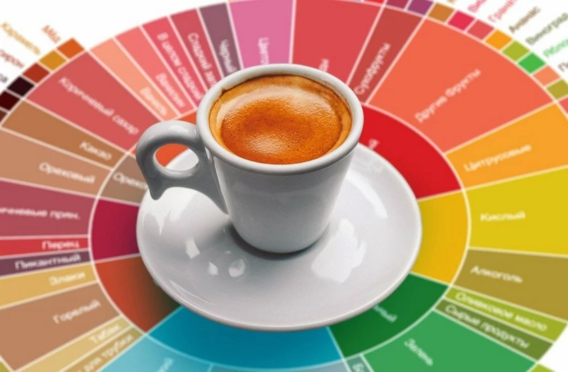

12.04.21
Бросить курить, ежедневно чистить язык и пить больше воды… Чтобы развить вкусовые рецепторы и ощутить все оттенки фруктов и шоколада в кофе, придется смириться с некоторыми неудобствами. И тогда даже приготовленная в домашних условиях чашка недорогого кофе из супермаркета откроет для вас совершенно новый мир.
Своим опытом поделились Илья Гончаров – эксперт TEA.ru, международный специалист в сфере оценки качества кофе и Александра Золотарева – начинающий каптестер. А мы пересказали это все простыми словами.
У кофейного зерна очень богатый химический состав – более 1000 веществ, часть из которых влияет на вкусоароматику. Из них основные: метилпиразин (дает ореховый и шоколадный привкус), 2,3-бутандион (отвечает за ваниль, сливочность, маслянистость), пропанал (придает винные и дымные ноты) и метантиол (ответственен за неприятный тухловатый аромат, который, к счастью, испаряется в первые дни после обжарки кофе). За все остальные ноты отвечают альдегиды, фураны и фураноны, а также бета-дамасценон. Концентрация этих веществ в кофе, произрастающем в разных регионах, тоже различная, поскольку зависит от состава почвы и особенностей климата.
Еще больше расширяет палитру вкусов степень обжарки: одно и то же зерно светлой и темной обжарки может показывать совершенно разный вкус. Более подробно об этом мы писали здесь .
Так скажете вы и будете правы. Потому что, конечно же, чистый вкус клубники дает только сама ягода или ароматизатор. А в кофе (или вине) ягодные нотки придают те же вещества, что есть и в самой клубнике, но содержащиеся в куда меньшем количестве. Плохая новость: чтобы их почувствовать, нужно развивать вкусовые рецепторы. Хорошая: натренировать их при желании достаточно легко!
Подсказка для профи и начинающих: колесо вкусов
Чтобы специалистам в кофейной отрасли и любителям-энтузиастам легче было договориться о том, как назвать тот или иной оттенок вкуса, члены Американской ассоциации спешелти кофе (SCAA) разработали «Кофейное колесо вкусов». График состоит из кругов, разбитых на сектора. 9 внутренних секторов в центре круга – это базовые определения вкуса: сладкий, цветочный, фруктовый, кислый, растительный, жареный, пряный, ореховый/какао и другой (не слишком лестная характеристика кофе с химическим или затхлым привкусом). Внешняя сторона содержит множество секторов с конкретными дескрипторами.
Александра Золотарева: «Для начала надо определить базовые вкусы. Условно говоря, мы ищем не вкус малины, фундука и цветов цитрусовых, облитых первым весенним дождем, а ноты – цветочные, пряные, ореховые». Определив группу, можно попытаться (сначала не получится) поискать нюансы. Например, если кофе имеет отчетливый фруктовый вкус, попробуйте понять, какой именно фрукт или ягода у вас с ним ассоциируется: сочное яблоко или та самая сладкая клубника? А кислые оттенки – это вино или уксусная кислота?